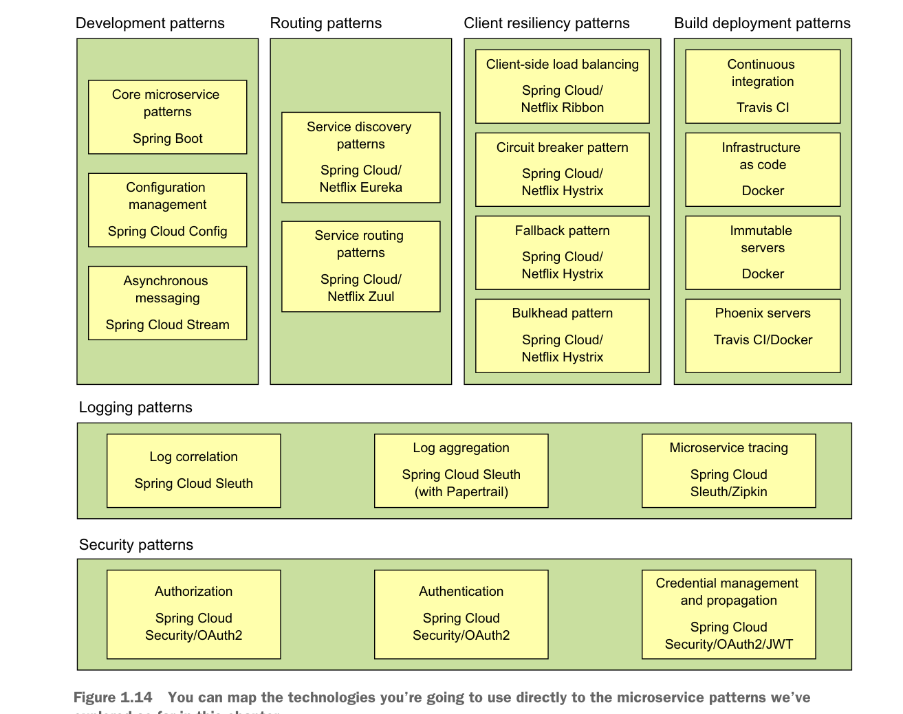

Implementing all these patterns from scratch would be a tremendous amount of work. Fortunately for us, the Spring team has integrated a wide number of battle-tested open source projects into a Spring subproject collectively known as Spring Cloud. (http://projects.spring.io/spring-cloud/).
Spring Cloud wraps the work of open source companies such as Pivotal, HashiCorp, and Netflix in delivering patterns. Spring Cloud simplifies setting up and configuring of these projects into your Spring application so that you can focus on writing code, not getting buried in the details of configuring all the infrastructure that can go with building and deploying a microservice application.
Figure 1.14 maps the patterns listed in the previous section to the Spring Cloud projects that implement them.
Let’s walk through these technologies in greater detail.

You can map the technologies you’re going to use directly to the microservice patterns we’ve explored so far in this chapter.